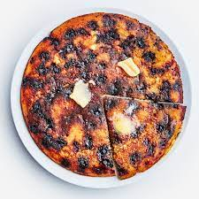

Giant Blueberry Pancake

Description
The perfect brunch dish! This giant, no-flip blueberry cornmeal pancake
will feed a crowd without needing to stand over the griddle flipping
pancakes.
Ingredients
- 1 cup All Purpose Flour
- 1/2 cup Cornmeal
- 2 Large Eggs
- 1/4 cup Sugar
- 1 teaspoon Vanilla Extract
- 1/2 teaspoon Ground Cinnamon
- 1 tablespoon Baking Powder
- 1/2 teaspoon Baking Soda
- 1 teaspoon Salt
- 1 1/2 cup Buttermilk
- 4 tablespoons Butter, melted, divided
- 1 cup Frozen Wild Blueberries, thawed and drained
- 1 tablespoon Canola Oil
Steps
- Preheat oven to 375°F.
-
In a large bowl, beat together eggs, sugar, vanilla extract, cinnamon,
baking powder, baking soda, and salt. Whisk until eggs are lightened and
mixture is smooth, at least 30 seconds.
-
Add corn meal and mix until well combined. Then add buttermilk and mix
again until well combined.
-
Add flour and mix until barely combined. There will still be lumps. Add
2 tablespoons of melted butter and half of the blueberries stirring
until just combined. Still, lumps are okay.
-
Heat canola oil and remaining butter in an 8-inch oven-safe nonstick or
cast iron skillet on the stove over medium-high heat.
-
When the butter/oil mixture is hot, gently add the pancake batter to the
skillet and cook for 5-6 minutes. The pancake will still be very wet and
look uncooked most of the way through, but you should see a little bit
of golden brown forming on the outer edges.
-
Sprinkle the remaining blueberries evenly over the top of the pancake
and carefully transfer the skillet to the preheated oven. Bake until
pancake is set and cooked through. You can test the center with a
toothpick to make sure it comes out clean. This will take 10-15 minutes.
-
Remove the pancake from the oven and carefully invert onto a large plate
or platter. Cut into wedges.
- Enjoy topped with room-temperature butter and maple syrup.
HOME